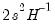
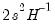
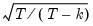
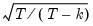
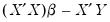
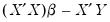

We demonstrate the use of the optimize command with several examples. To begin, we consider a regression problem using a workfile created with the following set of commands:
Next we use the optimize command with the least squares method to estimate the coefficients in the regression problem. Running a program with the following commands produces the same results as the built-in regression estimator:
The optimize command is called with the “ls” option to indicate that we wish to perform a least squares optimization. The “finalh” option is included so that we save the estimated Hessian matrix in the workfile for use in computing standard errors of the estimates.
optimize will find the values of LSCOEFS that minimize the sum of squared values of LSRESID as computed using the LEASTSQUARES subroutine.
Alternately, we may use optimize to estimate the maximum likelihood estimates of the regression model coefficients. Under standard assumptions, an observation-based contribution to the log-likelihood for a regression with normal error terms is of the form:
Note also that we use @optmessage to obtain the status of estimation, whether convergence was achieved and if so, how many iterations were required. The status is reported on the statusline after the
optimize estimation is completed.
Lastly, we use the optimize command to find the minimum of a simply function of a single variable. We define a subroutine containing the quadratic form, and use the optimize command to find the value that minimizes the function:


 is calculated as the square root of the sum of squares of the residuals, divided by
is calculated as the square root of the sum of squares of the residuals, divided by  . We store
. We store  in the scalar SIG. Standard errors may be calculated from the Hessian as the square root of the diagonal of . We store these values in the vector LSSE.
in the scalar SIG. Standard errors may be calculated from the Hessian as the square root of the diagonal of . We store these values in the vector LSSE.  in SIG, and coefficient standard errors in LSSE, all match the results in EQ1.
in SIG, and coefficient standard errors in LSSE, all match the results in EQ1. . We arbitrarily initialize the regression coefficients to 1 and the distribution standard deviation to 100.
. We arbitrarily initialize the regression coefficients to 1 and the distribution standard deviation to 100. in the fifth element of BETA differs. You may obtain the corresponding unbiased estimate of sigma by multiplying the ML estimate by multiplying BETA(5) by , which we calculate and store in the scalar UBSIG.
in the fifth element of BETA differs. You may obtain the corresponding unbiased estimate of sigma by multiplying the ML estimate by multiplying BETA(5) by , which we calculate and store in the scalar UBSIG. . While the optimizer is not a solver, we can trick it into solving that equation by creating a vector of residuals equal to , and asking the optimizer to find the values of
. While the optimizer is not a solver, we can trick it into solving that equation by creating a vector of residuals equal to , and asking the optimizer to find the values of  that minimize the square of those residuals:
that minimize the square of those residuals: